Казино ТыбурцияTyburcy's casino
Тыбурций - это персонаж из произведения “В дурном обществе”. Примерно в 2020 мы проходили это произведение в школе и нам дали задание то ли придумать продолжение, то ли как-то поменять историю, и у кого-то получилась история, в которой Тыбурций открыл своё казино. В то время я иногда делал игры на Scratch, и я решил создать игру, посвящённую этому персонажу.
Tyburcy is a character from the book "In bad company". Around 2020, we studied this book at school and were given the task of either coming up with a sequel, or somehow changing the story, and someone got a story in which Tyburcy opened his casino. At that time, I sometimes made Scratch games, and I decided to create a game dedicated to this character.
Первая версияFirst version
Я не особо торопился, поэтому первую версию я сделал только через год. В ней было две игры: слоты и колесо. Мне не особо понравилось то, что у меня получилось, поэтому я забросил эту игру.
I wasn't in much of a hurry, so I didn't make the first version until a year later. It had two games: slots and a wheel. I didn't really like what I got, so I abandoned this game.
Играть на ScratchPlay on Scratch
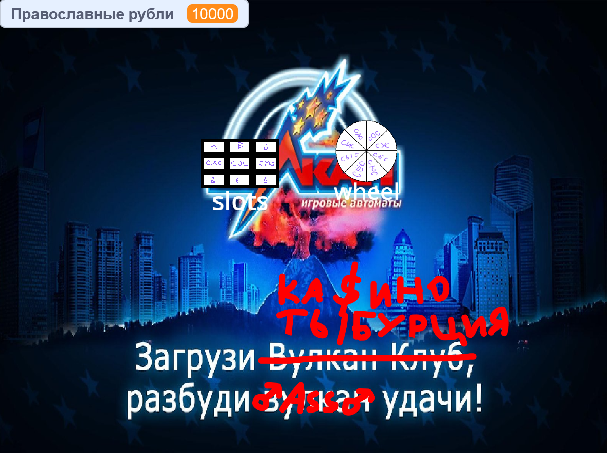
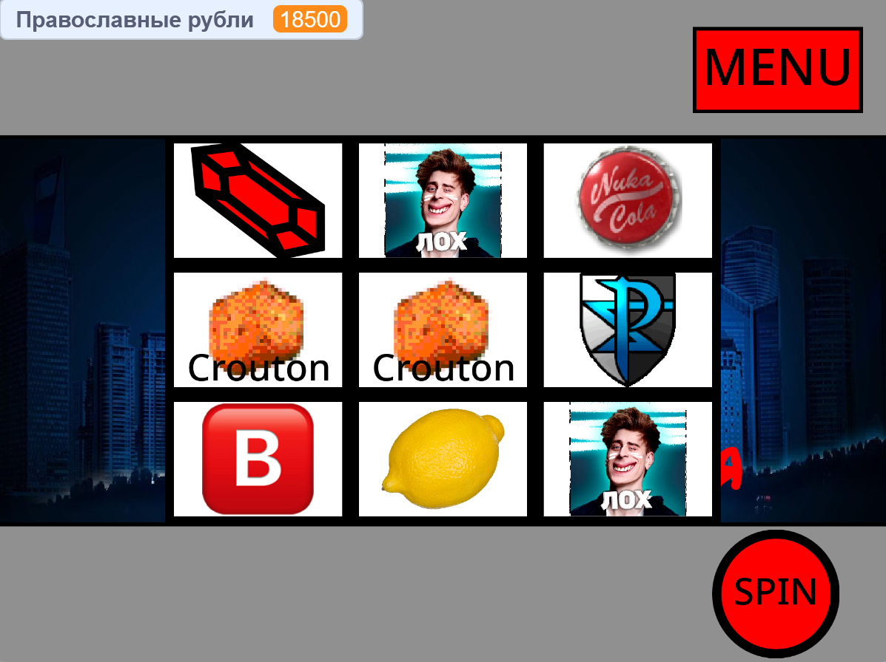
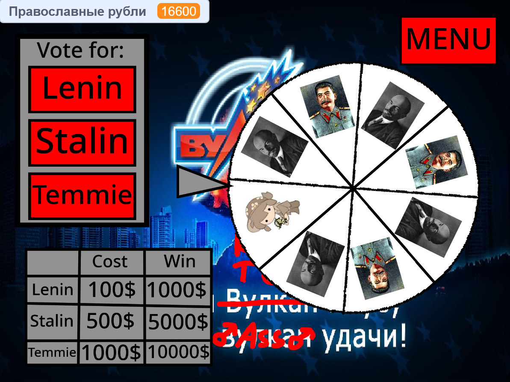
Вторая версияSecond version
Через год я решил снова заняться этой игрой, но на этот раз я решил сделать её на Python. Эта версия содержала только первую игру, и её интерфейс был полностью из текста. Мне было лень делать больше игр, поэтому я забросил эту игру ещё на год. Теперь эта версия потеряна навсегда.
A year later, I decided to work on this game again, but this time I decided to make it in Python. This version contained only the first game, and its interface was entirely made of text. I was too lazy to make more games, so I abandoned this game for another year. Now this version is lost forever.
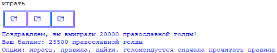
Третья версияThird version
Через год мне был нужен финальный проект по Пуфону и у меня не было идей, поэтому я сделал очередную версию Казино Тыбурция. Эта версия была сделана с помощью Tkinter. Помимо слотов и колеса в этой версии также есть магазин кейсов и рынок, где можно продать вещи из кейсов.
A year later, I needed a final Python project and I didn't have any ideas, so I made another version of Casino. This version was made using Tkinter. In addition to the slots and the wheel, this version also has a case store and a market where you can sell items from the cases.
СкачатьDownload
5 KB
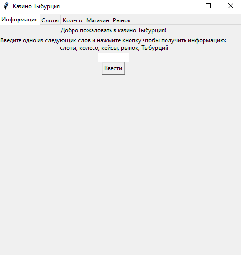
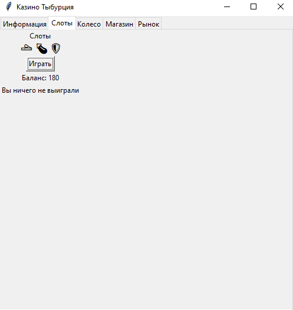
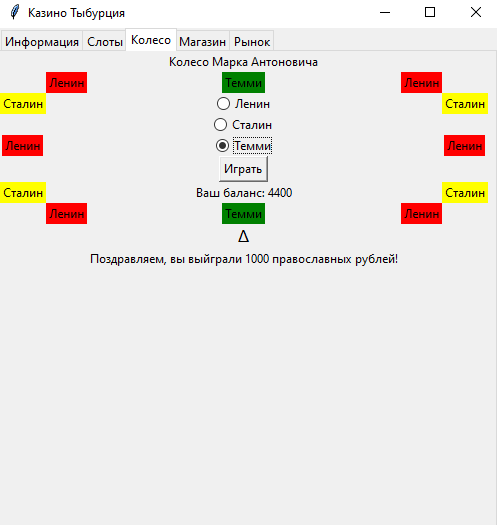
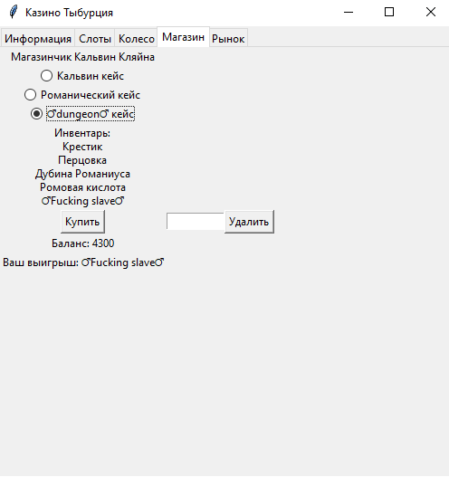
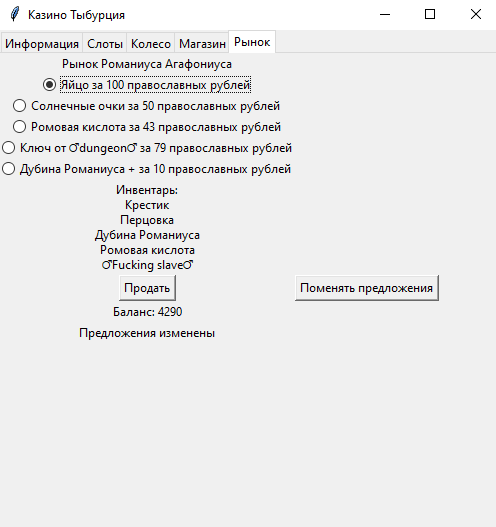
Четвёртая версияFourth version
Когда мы в академии начинали изучать Unity мне надо было разобраться что за C#, и для этого я создал новую версию Казино Тыбурция. Она текстовая и держится на соплях.
When we started studying Unity at the academy, I had to figure out what C# was, and for this I created a new version of Casino. It's textual and lame.
СкачатьDownload
3 KB
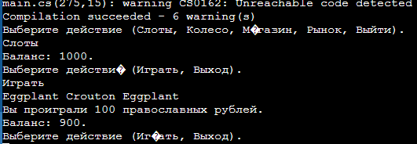
Пятая версияFifth version
Скорее всего, финальная версия. Она сделана на Unity и является самой качественной.
Most likely, the final version. It is made on Unity and is of the highest quality.
Скачать версию для Windows
Download Windows version
33.5 MB
Скачать версию для Android
Download Android version
24.3 MB
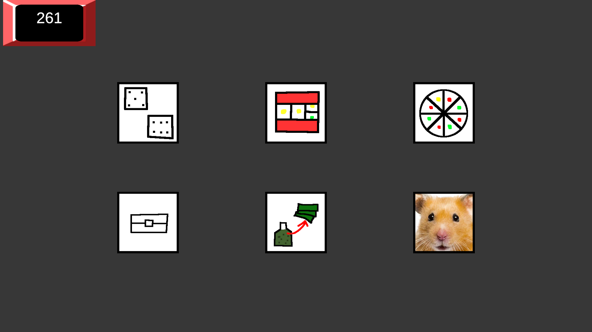
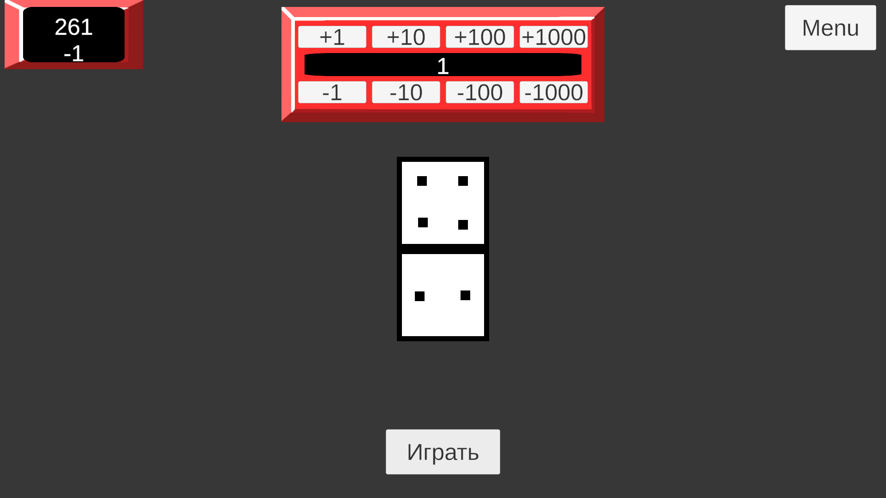
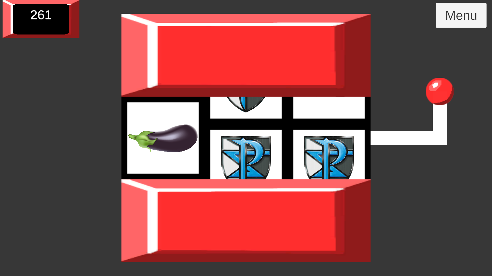
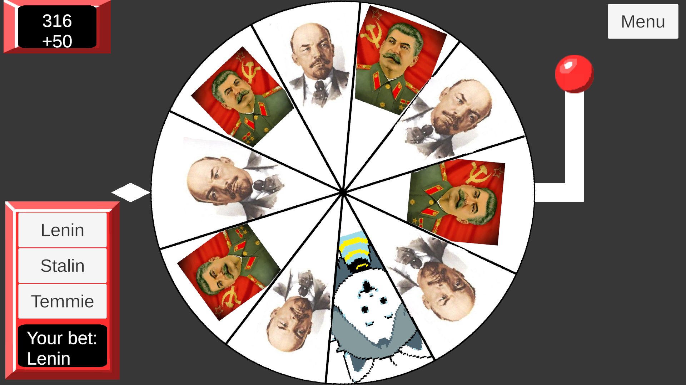
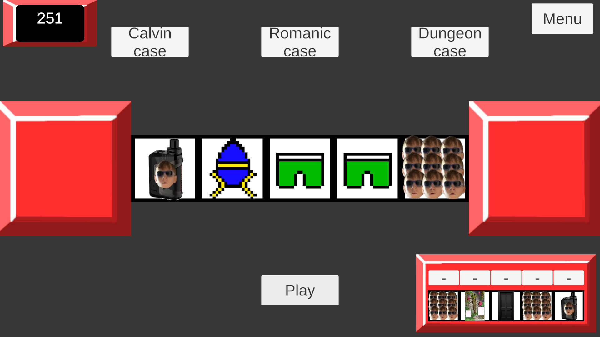
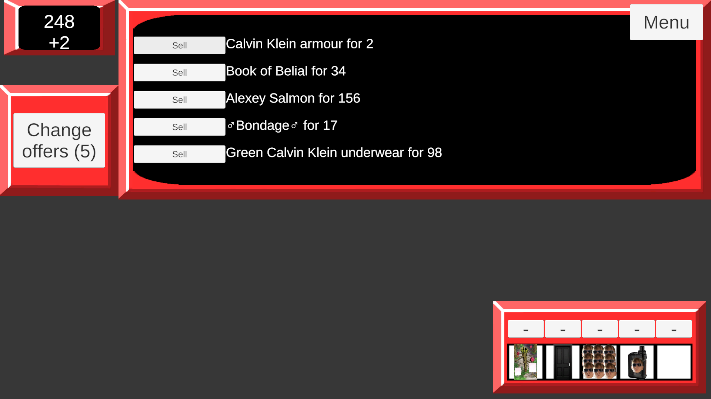
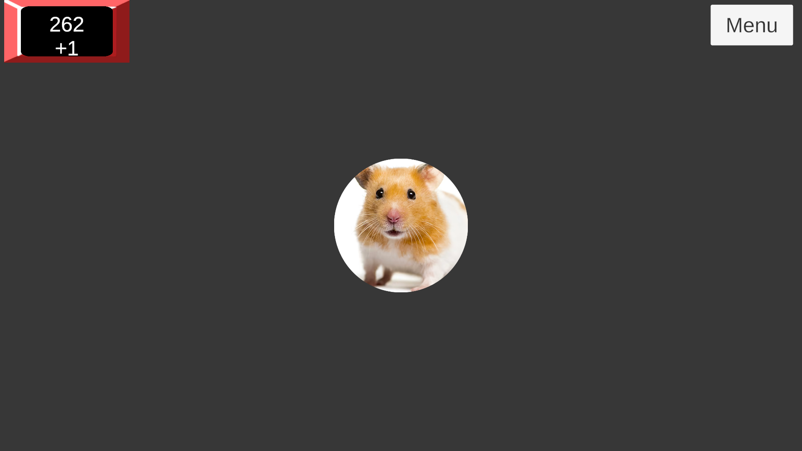